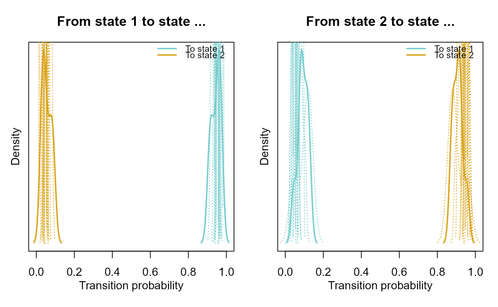

mHMM fits a multilevel (also known as mixed or random effects) hidden
Markov model (HMM) to intense longitudinal data with categorical observations
of multiple subjects using Bayesian estimation, and creates an object of
class mHMM. By using a multilevel framework, we allow for heterogeneity in
the model parameters between subjects, while estimating one overall HMM. The
function includes the possibility to add covariates at level 2 (i.e., at the
subject level) and have varying observation lengths over subjects. For a
short description of the package see mHMMbayes. See
vignette("tutorial-mhmm") for an introduction to multilevel hidden
Markov models and the package, and see vignette("estimation-mhmm") for
an overview of the used estimation algorithms.
Usage
mHMM(
s_data,
gen,
xx = NULL,
start_val,
mcmc,
return_path = FALSE,
print_iter,
show_progress = TRUE,
gamma_hyp_prior = NULL,
emiss_hyp_prior = NULL,
gamma_sampler = NULL,
emiss_sampler = NULL
)Arguments
- s_data
A matrix containing the observations to be modeled, where the rows represent the observations over time. In
s_data, the first column indicates subject id number. Hence, the id number is repeated over rows equal to the number of observations for that subject. The subsequent columns contain the dependent variable(s). Note that the dependent variables have to be numeric, i.e., they cannot be a (set of) factor variable(s). The total number of rows are equal to the sum over the number of observations of each subject, and the number of columns are equal to the number of dependent variables (n_dep) + 1. The number of observations can vary over subjects.- gen
List containing the following elements denoting the general model properties:
n_dep: numeric vector with length 1 denoting the number of dependent variablesq_emiss: numeric vector with lengthn_depdenoting the number of observed categories for the categorical emission distribution for each of the dependent variables.
- xx
An optional list of (level 2) covariates to predict the transition matrix and/or the emission probabilities. Level 2 covariate(s) means that there is one observation per subject of each covariate. The first element in the list
xxis used to predict the transition matrix. Subsequent elements in the list are used to predict the emission distribution of (each of) the dependent variable(s). Each element in the list is a matrix, with the number of rows equal to the number of subjects. The first column of each matrix represents the intercept, that is, a column only consisting of ones. Subsequent columns correspond to covariates used to predict the transition matrix / emission distribution. See Details for more information on the use of covariates.If
xxis omitted completely,xxdefaults toNULL, resembling no covariates. Specific elements in the list can also be left empty (i.e., set toNULL) to signify that either the transition probability matrix or a specific emission distribution is not predicted by covariates.- start_val
List containing the start values for the transition probability matrix gamma and the emission distribution(s). The first element of the list contains a
mbymmatrix with the start values for gamma. The subsequent elements containmbyq_emiss[k]matrices for the start values for each of thekinn_depemission distribution(s). Note thatstart_valshould not contain nested lists (i.e., lists within lists).- mcmc
List of Markov chain Monte Carlo (MCMC) arguments, containing the following elements:
burn_in: numeric vector with length 1 denoting the burn-in period for the MCMC algorithm.
- return_path
A logical scalar. Should the sampled state sequence obtained at each iteration and for each subject be returned by the function (
sample_path = TRUE) or not (sample_path = FALSE). Note that the sampled state sequence is quite a large object, hence the default setting issample_path = FALSE. Can be used for local decoding purposes.- print_iter
The argument print_iter is deprecated; please use
show_progressinstead to show the progress of the algorithm.- show_progress
A logical scaler. Should the function show a text progress bar in the
Rconsole to represent the progress of the algorithm (show_progress = TRUE) or not (show_progress = FALSE). Defaults toshow_progress = TRUE.- gamma_hyp_prior
An optional object of class
mHMM_prior_gammacontaining user specified parameter values for the hyper-prior distribution on the transition probability matrix gamma, generated by the functionprior_gamma.- emiss_hyp_prior
An optional object of the class
mHMM_prior_emisscontaining user specified parameter values for the hyper-prior distribution on categorical the emission distribution, generated by the functionprior_emiss_cat.- gamma_sampler
An optional object of the class
mHMM_pdRW_gammacontaining user specified settings for the proposal distribution of the random walk (RW) Metropolis sampler on the subject level transition probability matrix parameters, generated by the functionpd_RW_gamma.- emiss_sampler
An optional object of the class
mHMM_pdRW_emisscontaining user specified settings for the proposal distribution of the random walk (RW) Metropolis sampler on the subject level emission distribution(s) parameters, generated by the functionpd_RW_emiss_cat.
Value
mHMM returns an object of class mHMM, which has
print and summary methods to see the results.
The object contains the following components:
PD_subjA list containing one matrix per subject with the subject level parameter estimates and the log likelihood over the iterations of the hybrid Metropolis within Gibbs sampler. The iterations of the sampler are contained in the rows, and the columns contain the subject level (parameter) estimates of subsequently the emission probabilities, the transition probabilities and the log likelihood.
gamma_prob_barA matrix containing the group level parameter estimates of the transition probabilities over the iterations of the hybrid Metropolis within Gibbs sampler. The iterations of the sampler are contained in the rows, and the columns contain the group level parameter estimates. If covariates were included in the analysis, the group level probabilities represent the predicted probability given that the covariate is at the average value for continuous covariates, or given that the covariate equals zero for dichotomous covariates.
gamma_int_barA matrix containing the group level intercepts of the Multinomial logistic regression modeling the transition probabilities over the iterations of the hybrid Metropolis within Gibbs sampler. The iterations of the sampler are contained in the rows, and the columns contain the group level intercepts.
gamma_cov_barA matrix containing the group level regression coefficients of the Multinomial logistic regression predicting the transition probabilities over the iterations of the hybrid Metropolis within Gibbs sampler. The iterations of the sampler are contained in the rows, and the columns contain the group level regression coefficients.
gamma_int_subjA list containing one matrix per subject denoting the subject level intercepts of the Multinomial logistic regression modeling the transition probabilities over the iterations of the hybrid Metropolis within Gibbs sampler. The iterations of the sampler are contained in the rows, and the columns contain the subject level intercepts.
gamma_nacceptA matrix containing the number of accepted draws at the subject level RW Metropolis step for each set of parameters of the transition probabilities. The subjects are contained in the rows, and the columns contain the sets of parameters.
emiss_prob_barA list containing one matrix per dependent variable, denoting the group level emission probabilities of each dependent variable over the iterations of the hybrid Metropolis within Gibbs sampler. The iterations of the sampler are contained in the rows of the matrix, and the columns contain the group level emission probabilities. If covariates were included in the analysis, the group level probabilities represent the predicted probability given that the covariate is at the average value for continuous covariates, or given that the covariate equals zero for dichotomous covariates.
emiss_int_barA list containing one matrix per dependent variable, denoting the group level intercepts of each dependent variable of the Multinomial logistic regression modeling the probabilities of the emission distribution over the iterations of the hybrid Metropolis within Gibbs sampler. The iterations of the sampler are contained in the rows of the matrix, and the columns contain the group level intercepts.
emiss_cov_barA list containing one matrix per dependent variable, denoting the group level regression coefficients of the Multinomial logistic regression predicting the emission probabilities within each of the dependent variables over the iterations of the hybrid Metropolis within Gibbs sampler. The iterations of the sampler are contained in the rows of the matrix, and the columns contain the group level regression coefficients.
emiss_int_subjA list containing one list per subject denoting the subject level intercepts of each dependent variable of the Multinomial logistic regression modeling the probabilities of the emission distribution over the iterations of the hybrid Metropolis within Gibbs sampler. Each lower level list contains one matrix per dependent variable, in which iterations of the sampler are contained in the rows, and the columns contain the subject level intercepts.
emiss_nacceptA list containing one matrix per dependent variable with the number of accepted draws at the subject level RW Metropolis step for each set of parameters of the emission distribution. The subjects are contained in the rows, and the columns of the matrix contain the sets of parameters.
inputOverview of used input specifications: the number of states
m, the number of used dependent variablesn_dep, the number of output categories for each of the dependent variablesq_emiss, the number of iterationsJand the specified burn in periodburn_inof the hybrid Metropolis within Gibbs sampler, the number of subjectsn_subj, the observation length for each subjectn_vary, and the column names of the dependent variablesdep_labels.sample_pathA list containing one matrix per subject with the sampled hidden state sequence over the hybrid Metropolis within Gibbs sampler. The time points of the dataset are contained in the rows, and the sampled paths over the iterations are contained in the columns. Only returned if
return_path = TRUE.
Details
Covariates specified in xx can either be dichotomous or continuous
variables. Dichotomous variables have to be coded as 0/1 variables.
Categorical or factor variables can as yet not be used as predictor
covariates. The user can however break up the categorical variable in
multiple dummy variables (i.e., dichotomous variables), which can be used
simultaneously in the analysis. Continuous predictors are automatically
centered. That is, the mean value of the covariate is subtracted from all
values of the covariate such that the new mean equals zero. This is done such
that the presented probabilities in the output (i.e., for the population
transition probability matrix and population emission probabilities)
correspond to the predicted probabilities at the average value of the
covariate(s).
References
Rabiner LR (1989). “A tutorial on hidden Markov models and selected applications in speech recognition.” Proceedings of the IEEE, 77(2), 257--286.
Scott SL (2002). “Bayesian methods for hidden Markov models: Recursive computing in the 21st century.” Journal of the American Statistical Association, 97(457), 337--351.
Altman RM (2007). “Mixed hidden Markov models: an extension of the hidden Markov model to the longitudinal data setting.” Journal of the American Statistical Association, 102(477), 201--210.
Rossi PE, Allenby GM, McCulloch R (2012). Bayesian statistics and marketing. John Wiley & Sons.
Zucchini W, MacDonald IL, Langrock R (2017). Hidden Markov models for time series: an introduction using R. Chapman and Hall/CRC.
See also
sim_mHMM for simulating multilevel hidden Markov data,
vit_mHMM for obtaining the most likely hidden state sequence
for each subject using the Viterbi algorithm, obtain_gamma
and obtain_emiss for obtaining the transition or emission
distribution probabilities of a fitted model at the group or subject level,
and plot.mHMM for plotting the posterior densities of a
fitted model.
Examples
###### Example on package example data, see ?nonverbal
# \donttest{
# specifying general model properties:
m <- 2
n_dep <- 4
q_emiss <- c(3, 2, 3, 2)
# specifying starting values
start_TM <- diag(.8, m)
start_TM[lower.tri(start_TM) | upper.tri(start_TM)] <- .2
start_EM <- list(matrix(c(0.05, 0.90, 0.05,
0.90, 0.05, 0.05), byrow = TRUE,
nrow = m, ncol = q_emiss[1]), # vocalizing patient
matrix(c(0.1, 0.9,
0.1, 0.9), byrow = TRUE, nrow = m,
ncol = q_emiss[2]), # looking patient
matrix(c(0.90, 0.05, 0.05,
0.05, 0.90, 0.05), byrow = TRUE,
nrow = m, ncol = q_emiss[3]), # vocalizing therapist
matrix(c(0.1, 0.9,
0.1, 0.9), byrow = TRUE, nrow = m,
ncol = q_emiss[4])) # looking therapist
# Run a model without covariate(s):
# Note that for reasons of running time, J is set at a ridiculous low value.
# One would typically use a number of iterations J of at least 1000,
# and a burn_in of 200.
out_2st <- mHMM(s_data = nonverbal,
gen = list(m = m, n_dep = n_dep, q_emiss = q_emiss),
start_val = c(list(start_TM), start_EM),
mcmc = list(J = 11, burn_in = 5))
#> Progress of the Bayesian mHMM algorithm:
#>
|
| | 0%
|
|======== | 11%
|
|================ | 22%
|
|======================= | 33%
|
|=============================== | 44%
|
|======================================= | 56%
|
|=============================================== | 67%
|
|====================================================== | 78%
|
|============================================================== | 89%
|
|======================================================================| 100%
#> Total time elapsed (hh:mm:ss): 00:00:07
out_2st
#> Number of subjects: 10
#>
#> 11 iterations used in the MCMC algorithm with a burn in of 5
#> Average Log likelihood over all subjects: -1638.898
#> Average AIC over all subjects: 3305.797
#>
#> Number of states used: 2
#>
#> Number of dependent variables used: 4
#>
summary(out_2st)
#> State transition probability matrix
#> (at the group level):
#>
#> To state 1 To state 2
#> From state 1 0.957 0.043
#> From state 2 0.094 0.905
#>
#>
#> Emission distribution for each of the dependent variables
#> (at the group level):
#>
#> $p_vocalizing
#> Category 1 Category 2 Category 3
#> State 1 0.034 0.925 0.041
#> State 2 0.759 0.109 0.132
#>
#> $p_looking
#> Category 1 Category 2
#> State 1 0.24 0.76
#> State 2 0.10 0.90
#>
#> $t_vocalizing
#> Category 1 Category 2 Category 3
#> State 1 0.775 0.128 0.098
#> State 2 0.038 0.935 0.027
#>
#> $t_looking
#> Category 1 Category 2
#> State 1 0.058 0.942
#> State 2 0.280 0.720
#>
#>
# plot the posterior densities for the transition and emission probabilities
plot(out_2st, component = "gamma", col =c("darkslategray3", "goldenrod"))

# Run a model including a covariate (see ?nonverbal_cov) to predict the
# emission distribution for each of the 4 dependent variables:
n_subj <- 10
xx_emiss <- rep(list(matrix(c(rep(1, n_subj),nonverbal_cov$std_CDI_change),
ncol = 2, nrow = n_subj)), n_dep)
xx <- c(list(matrix(1, ncol = 1, nrow = n_subj)), xx_emiss)
out_2st_c <- mHMM(s_data = nonverbal, xx = xx,
gen = list(m = m, n_dep = n_dep, q_emiss = q_emiss),
start_val = c(list(start_TM), start_EM),
mcmc = list(J = 11, burn_in = 5))
#> Progress of the Bayesian mHMM algorithm:
#>
|
| | 0%
|
|======== | 11%
|
|================ | 22%
|
|======================= | 33%
|
|=============================== | 44%
|
|======================================= | 56%
|
|=============================================== | 67%
|
|====================================================== | 78%
|
|============================================================== | 89%
|
|======================================================================| 100%
#> Total time elapsed (hh:mm:ss): 00:00:05
# }
###### Example on simulated data
# Simulate data for 10 subjects with each 100 observations:
n_t <- 100
n <- 10
m <- 2
n_dep <- 1
q_emiss <- 3
gamma <- matrix(c(0.8, 0.2,
0.3, 0.7), ncol = m, byrow = TRUE)
emiss_distr <- list(matrix(c(0.5, 0.5, 0.0,
0.1, 0.1, 0.8), nrow = m, ncol = q_emiss, byrow = TRUE))
data1 <- sim_mHMM(n_t = n_t, n = n, gen = list(m = m, n_dep = n_dep, q_emiss = q_emiss),
gamma = gamma, emiss_distr = emiss_distr, var_gamma = .5, var_emiss = .5)
# Specify remaining required analysis input (for the example, we use simulation
# input as starting values):
n_dep <- 1
q_emiss <- 3
# Run the model on the simulated data:
out_2st_sim <- mHMM(s_data = data1$obs,
gen = list(m = m, n_dep = n_dep, q_emiss = q_emiss),
start_val = c(list(gamma), emiss_distr),
mcmc = list(J = 11, burn_in = 5))
#> Progress of the Bayesian mHMM algorithm:
#>
|
| | 0%
|
|======== | 11%
|
|================ | 22%
|
|======================= | 33%
|
|=============================== | 44%
|
|======================================= | 56%
|
|=============================================== | 67%
|
|====================================================== | 78%
|
|============================================================== | 89%
|
|======================================================================| 100%
#> Total time elapsed (hh:mm:ss): 00:00:01